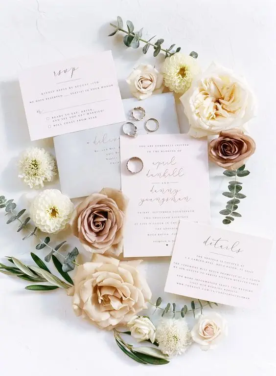
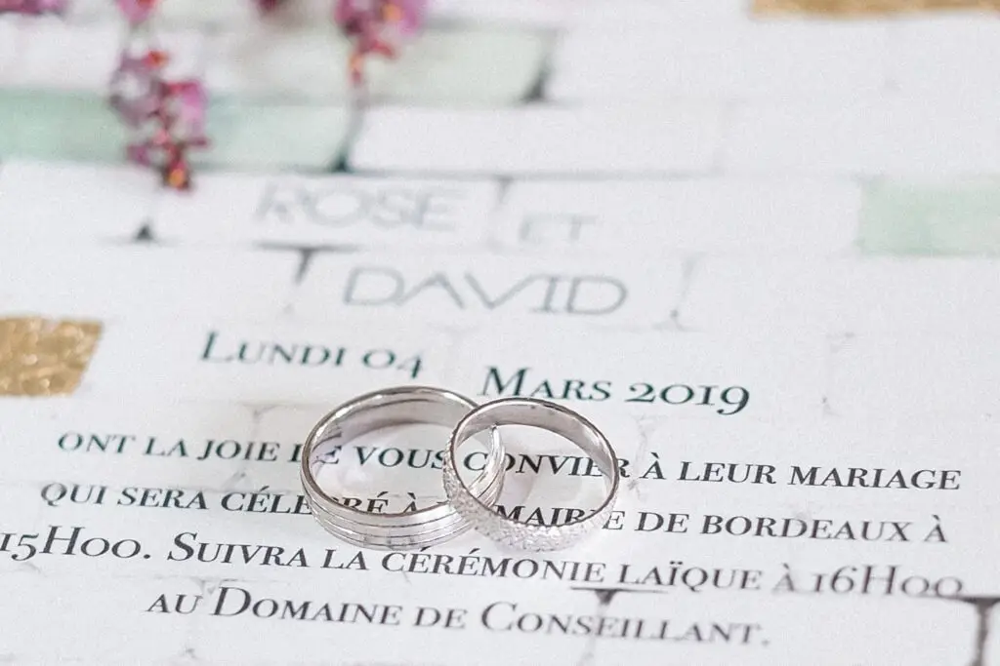
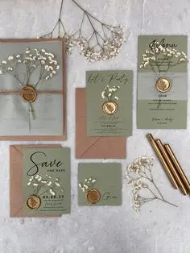
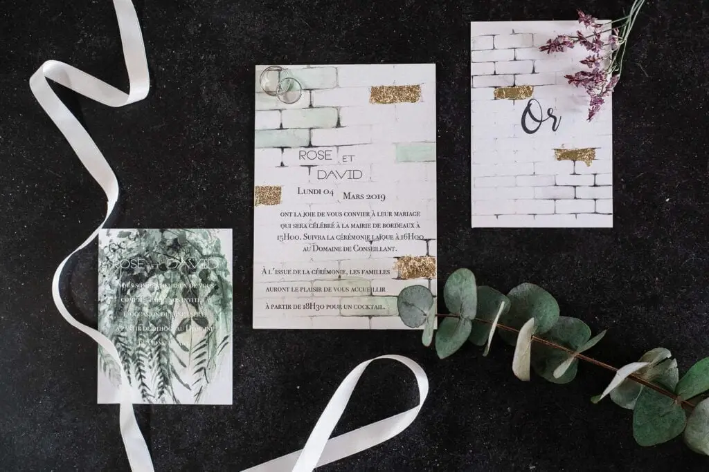

As you set off on the wonderful journey of planning your wedding in the Gironde, a crucial question arises: how do you share news of this exceptional moment with your loved ones?
There are many options, each with its own touch of magic. Let me guide you through these dazzling invitation choices!




Types of invitation: the importance of personalisation, creativity and communication
Explore the digital invitation, a choice that is as practical as it is economical! Customisable templates, endless options and delivery to all your guests in a single click. It's a digital adventure that won't weigh heavily on your wallet, while also being an eco-friendly option. Say goodbye to printing costs and embrace the ease of the magic click.
La Magie Virtuelle
Then there is the classic option, the one that stands the test of time with elegance: the invitation sent by post. A formal touch that gives your guests a physical, tangible keepsake of the big day. Post may take a little longer, but what a pleasure for your loved ones to find this little treasure in their letterbox!
La Tradition du courrier
Or perhaps you'd prefer a hand-delivered invitation, a personal invitation that warms the heart. Imagine the moment when, at a family meal or a special get-together, you share this precious piece of paper. An intimate approach that creates warm memories, although it takes a little more planning.
La Tendresse en Main Propre
Now let's step into the enchanted world of planning. As a wedding planner, I'm here to make your special day a magical event, stress-free and full of love. Think of me as your fairy godmother, taking care of every detail, from the decoration of the venue to the meticulous schedule and dazzling entertainment.
Vos rêves en réalité
Your wedding deserves to be exceptional, unique and true to you. Don't wait any longer! Let's create moments full of magic together, brimming with joie de vivre and happiness. I'm here to advise you, support you and make your day unforgettable. In the enchanted world of weddings, every detail counts. May your invitation carry the magic of your love, because in the end, this day belongs to the two of you. Dare to add some magic: get in touch!
Lovely Day Event offers several services
Wedding planning
I step in at every stage of your preparations and guide you through your choices, bringing ideas and suggestions so that your wedding looks like no one but you.
Wedding design
Creative and passionate, I am a certified Wedding Designer and I create a scenographic atmosphere that matches the theme of your wedding.
On-the-day coordination
I will be the conductor of your day, managing the suppliers, the set-up of your decor and the smooth running of this beautiful day.